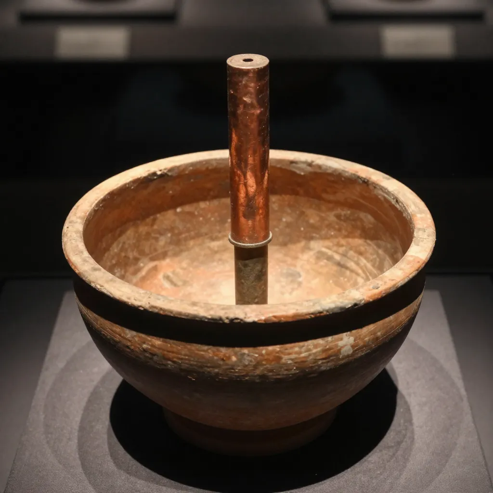

The Baghdad Battery: Did Ancient Civilizations Discover Electricity 1,500 Years Early?

The Baghdad Battery: a 2,000-year-old clay jar that can generate electricity. Did ancient civilizations discover galvanic cells over a millennium before Volta?
A small jar with a secret
In 1936, a dig took place at a site called Khujut Rabu, near Baghdad in Iraq. Diggers found small clay jars with strange things inside. Accounts differ on exactly how and when the main jar was found.
It stood about 14 centimeters (5.5 inches) tall. At first glance it looked like nothing special. Then the Austrian archaeologist Wilhelm König looked at it more closely. König worked at the National Museum of Iraq and later became its director.
Inside the jar he found something odd. It looked like a battery. Let us open the jar together and see why.
What is inside the jar
The Baghdad Battery has three parts, fitted together with great care. The outer container is a clay jar about 14 centimeters tall and about 8 centimeters wide at its widest point.
Inside sits a copper cylinder. It was made from a sheet of copper rolled into a tube about 9 centimeters long and 2.6 centimeters wide. A copper disc closes the bottom, held in place by asphalt, also called bitumen.
A narrow iron rod about 8 centimeters long hangs down the middle of the tube. An asphalt plug at the top holds it. The rod never touches the copper. The asphalt seal and the empty space keep them apart.
So the jar is neat and simple. But why did König think it was a battery?
König’s big idea
The layout is like a basic galvanic cell, which is a kind of battery. Two different metals sit in an electrolyte. An electrolyte is a liquid that carries electricity, such as vinegar or lemon juice. Then electrons flow from the iron rod to the copper cylinder. This makes a small electric current.
Suppose the jar was filled with a sour liquid such as vinegar, grape juice, or lemon juice. Then the copper and the iron would make a small but measurable current.
In 1938, König published a paper in a German science journal. He suggested that the jar might have been a battery. He guessed that it might have been used for electroplating. That is the process of putting a thin layer of metal onto a surface with an electric current.
He dated the jar to the Parthian period (about 250 BCE to 224 CE). Later experts say the pottery style is Sasanian, from 224 to 640 CE. Either way, the jar is more than 1,100 years older than the battery that Alessandro Volta invented in 1800. That would be a very bold claim.
Gold on silver?
Suppose the jar was used for electroplating. Then its job might have been gilding. Gilding means covering cheaper objects with a thin layer of gold or silver so they look more valuable.
Archaeologists have found silver objects from that region with a very thin layer of gold on top. König thought electroplating could explain this. But later studies found that they were gilded another way, with gold mixed in mercury and then heated. No electroplated object from that time has been found.
There is another problem. Experiments show that one copy of the Baghdad Battery makes about 1 volt when filled with an acid. That is not enough to power a modern device. Some doubt that it is enough for gilding. In theory, several cells could be joined in a row to give a higher voltage. Volta did the same when he stacked his cells to make the first true battery.
Other uses have been suggested. One is electrotherapy, which means using a mild electric current to treat pain. Another is religious ritual, where a mild shock might have been taken as the power of a god. Some have even guessed that the jars lit small lamps in temples. But no sign of ancient electric lighting has ever been found.
Where are the wires?
The doubters have strong arguments. The biggest is that nobody has found wires or other electrical equipment with the Baghdad Battery. A battery is useless without a circuit. A circuit is a path that joins the two metals and runs through whatever machine is being powered.
There are other problems. The asphalt seals make it hard to refill or care for the liquid. And the design has no obvious way to connect a circuit to the iron rod. The asphalt plug closes it in completely.
Doubters offer other explanations. The most popular is that the jar held scrolls. In the ancient Near East, important scrolls were sometimes kept in tube-shaped containers. The copper cylinder could have held a scroll of papyrus or parchment. The iron rod could have been the core. The asphalt seals would have kept out damp and insects.
This idea needs no strange technology. Similar copper tubes from the same museum collection held the remains of old papyrus. König knew this, but he still favored the battery idea. Another idea says the jars were ritual objects, made to trap evil spirits. The archaeologist William Hafford argues that the iron rods were nails, not electrodes.
Can a copy work?
Tests of the battery idea have given mixed results. After 1939, an American engineer named Willard Gray built a copy. He reported that it worked well for a short time. In 1978, the German scholar Arne Eggebrecht reportedly used copies to plate a thin layer of silver. But a later museum researcher found no records of his tests.
The television program MythBusters tested the idea in 2005. The team built ten copies filled with lemon juice and joined them in a row. They made about 4 volts and plated a small copper token with zinc.
That shows the jars could work. It does not show that they were meant to work as batteries. To settle that, researchers would like to test the original jar. And that is a problem.
A jar that may be lost
In 2003, during the invasion of Iraq, the National Museum of Iraq in Baghdad was looted on a huge scale. Thousands of objects were stolen. They included some of the oldest treasures of Mesopotamian civilization. The Baghdad Battery is reported to have disappeared then.
Some looted items were later recovered. But where the original jar is now is uncertain. Researchers cannot make new tests, such as metal analysis or advanced imaging. They must work from photographs, descriptions, and the few copies made before 2003.
A question, not an answer
People tend to underestimate the skills of ancient peoples. The ancient world gave us the Antikythera Mechanism, a geared device that modeled the movements of the sky. It also gave us Roman concrete, some of which has lasted two thousand years in the sea. And Zhang Heng built a Chinese earthquake detector in 132 CE.
Where does that leave the little jar from Khujut Rabu? It could have been an electrical device. It might just as easily have been a plain storage jar. The evidence is unclear, the original may be lost, and the debate has run for more than eighty years.
What makes the jar interesting is not proof that anyone discovered electricity in ancient Iraq. It is the chance that they might have. Was it the first battery in the world, or only the most misunderstood storage jar? It still makes something longer-lasting than electric current. It makes questions.
References & Further Reading
Wikipedia: Zhang Heng — The earthquake detector of 132 CE mentioned in the closing section
Editorial note: Nobody doubts that the jar and its parts are real. Experts still argue about what it was for, and most doubt that it was a battery, because no wires or other electrical parts were found with it. See our Editorial Policy.